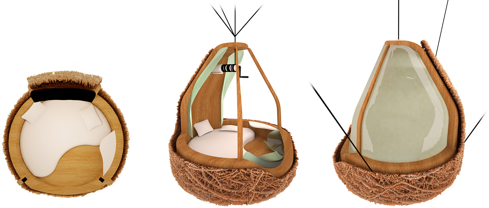
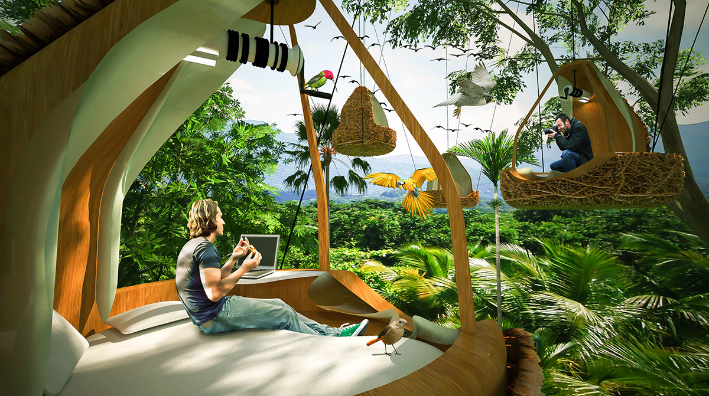
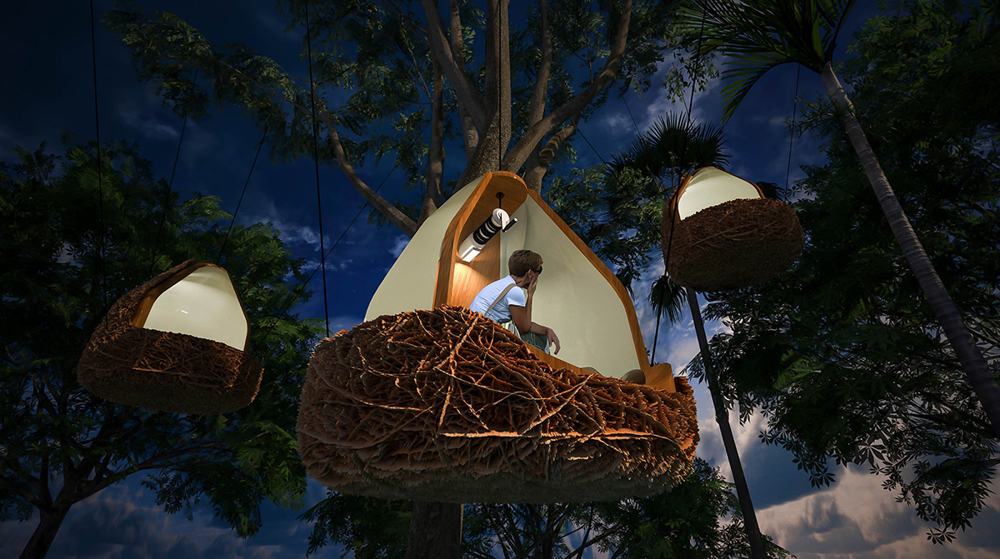
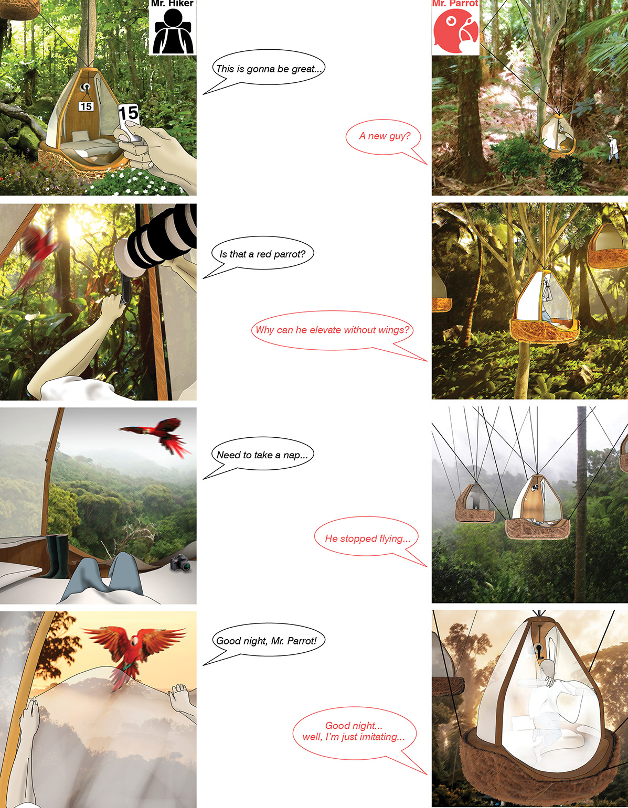

HUMAN NEST
A harmonious way of viewing birds in a rainforest is to embed oneself into the forest like a bird in a nest.
Unlike traditional treehouses for bird viewing, the twiggy-coated human nest does not fix any artificial view to the environment.
It simply takes a cable-winch system to lift nesters from ground to their desired height. During a summer night
when the nests twinkle in the canopies like glowworms, you may only hear the sounds of winches rotating, zippers of tents tugging,
in addition to wind and songs of cicadas.
[Pre-design exercise, UM Upper Level Studio, Spring 2016, Instructor: Instructor: Terence Riley; Manuel Rojo; Wesley Kean.



